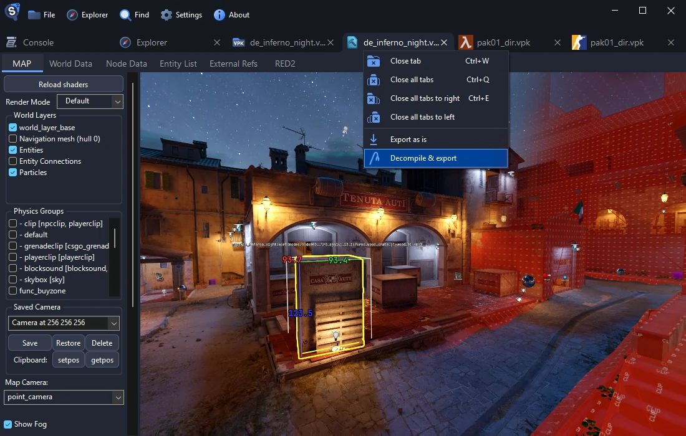

Source 2 Viewer
Просматривайте VPK-архивы, открывайте, экспортируйте и декомпилируйте ресурсы Source 2: карты, модели, материалы, текстуры и звуки.
Полностью бесплатная и открытая программа, созданная методом обратной разработки.
⚠️ Приложение пока доступно только на английском языке
Скачать
Поддерживает все игры на Source 2
